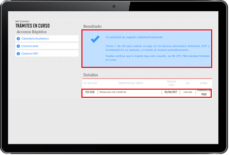
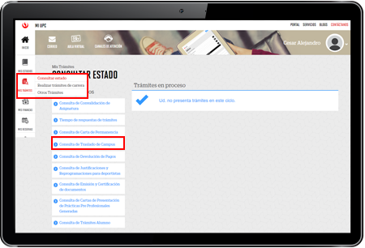
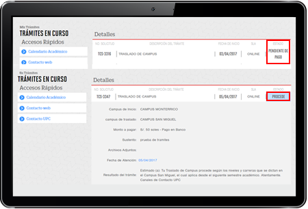

Esta es tu oportunidad de estudiar cerca a tu casa y vivir una experiencia universitaria única en el campus de tu preferencia. Si estás interesado en realizar tu traslado de campus, sigue los siguientes pasos:
requisitos
Durante el proceso ten en cuenta lo siguiente

No presentar baja académica.
Registro del trámite
Ingresa a Mi UPC con tu usuario y contraseña.

Luego selecciona la opción “Mis trámites” y haz clic en “Otros trámites”.
Luego, elige la opción “Traslado de Campus”.
Luego, elige la opción “Traslado de Campus”.

Selecciona el campus de traslado, ingresa el motivo y si deseas adjunta un documento de sustento.
*Recuerda que solo se mostrarán los campus donde tu Carrera y nivel se dicten.
*Recuerda que solo se mostrarán los campus donde tu Carrera y nivel se dicten.

Luego de enviar tu solicitud, lee atentamente las indicaciones del aviso y verifica que el estado sea “Pendiente de Pago” .
La confirmación de registro y los detalles del trámite serán enviados a tu correo electrónico de UPC.
La confirmación de registro y los detalles del trámite serán enviados a tu correo electrónico de UPC.

Si deseas conocer la lista de los precios de tus trámites, por favor ingresa aquí.
Validación
Una vez realizado el trámite y haber realizado el pago, debes validar que el trámite se encuentre correctamente ingresado.
Ingresa a MI UPC con tu usuario y contraseña y selecciona la opción “Mis Trámites/Trámites en Curso y “Consulta de Traslado de Campus”.

Verifica el estado de tu solicitud.
Tu traslado de campus se aplicará en el siguiente semestre académico.
Tu traslado de campus se aplicará en el siguiente semestre académico.
